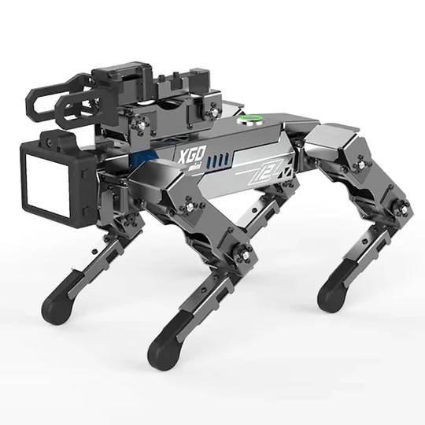
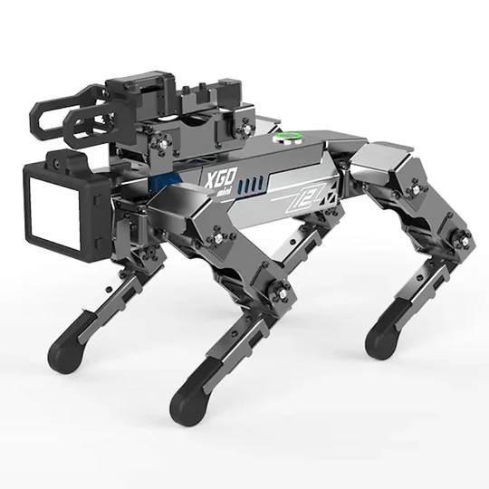

Introduccion
De la ficcion a la realidad los robots y nuevedades en el avance de la tecnologia estas y otras novedades de las nuevas tecnologias.
De la ficcion a la realidad los robots y nuevedades en el avance de la tecnologia estas y otras novedades de las nuevas tecnologias.

Robots ayudan a las personas a superar las barreras cotidianas:
Una competencia de la superacion de los limites humanos donde personas con capacidades especiales son ayudadas por robots uno de estos es el ouma controlado de la boca de una persola paraplegica.
Sicai desarrolla un robot para la carrera de asistencia visual consiste en un traje con sensores que envian informacion y las instrucciones llegan en forma de audio.
Roles desarrolla tecnologia que ayuda a la sensacion, las personas con protesis no puene sentir lo que hay debajo de sus piesn consiste en que este aparato manda señales de precion a la lugar donde termina la sensacion.
El robot ANYMal de ETH Zurich sube escaleras con sus pies en forma de gancho:
Imaginate un robot con la capacidad de subir escaleras estandar con eficiencia, usaron el entrenamiento de un robot maestro adquirio la abilidad de subir escaleras dificiles y mal acomodadas este logro enseñar a los robots alumnos y pudieron convertirse en robots de servicio y rescate con una efectividad del 90%
Esto es importante por que los robots cuadrupedos se estan volviendo importantes y etas pueden subirse a lugares riesgosos y asi volverse mas capaces.
Un pequeño convoy de robots realiza con éxito una cirugía endoscópica por primera vez en el ámbito médico:
los robots que pueden navegar a traves del cuerpo son cada ves mas sercanos a la realidad.
la nueva herramienta de cirugia de un comboy de robots de tamaños milimetricos para suministrar medicamentos y operar pasientes en areas de dificil acceso, estan satisfechos con los resultyados y convensidos que muy pronto podran utilizarlo con una eficiencia valorable.
Inbolt prevé financiación Serie A para robots industriales:
15 millones de euros acelerara la produccion de procesadores para la visualizacion 3D en tiempo real usando inteligencia artificial para que cualquier robot industrial pueda orientar y redirigir por si solo acelerando su produccion y reduciondo gastos, el objetivo es convertir brazos roboticos en erramientas de alta precicion.
Las entregas de alimentos desde robots hasta drones despegan en Dallas:
Las entregasd automatizadas con robots terrestres y aereos ya son una realidad estas 2 tecnologias convinadas son una nueva experiencia para el usuario.
El robot terrestre recoge la comida del establecimiento y lo transporta a donde el drone lo recoge y este lo lleva hacia su destino ahorrando dinero, se planea que en el futuro se podra pedir comida da quilometros de distancia en tiempo recort.
El nuevo C-UAS de microondas de alta potencia de los marines estadounidenses puede derretir varios drones en segundos:
Tecnologia militar eat siendo utilizada por los marins en estados unidos esta puede acabar con un enjambre de drones al mismo tiempo, se llama: LEONIDAS EXPEDITION R que es loq ue hace tan especian, esta echo para defenter intereses de estados unidos.
El futuro de la gerra contra drones esta evolucionando y el leonidas es uno de los primeros microondas de alta pulsacion que habre un nevo mundo para esta guerra.
La "cura funcional" para la diabetes restablece la producción de insulina con células madre:
Un pasiente de diavetes lleva mas de un año sin necesitar una inyeccvion de insulina gracias a un tratyamiento que involucra celulas madre, que tal si fuera posible reponer las celulas perdidas, esa es la idea, las nuevas celulas fueron cultivadas a partir de las propias celulas madre de la paciente de 25 años diacnosticada desde los 14 años, ahora la calida de vida mejoro potr la reprogramacion de celulas y su desarrollo las responsables de la produccion de insulinas 2 semanas despues del transplante las necesidades de insulina bajaron y para 3 meses las dejo de necesitar.